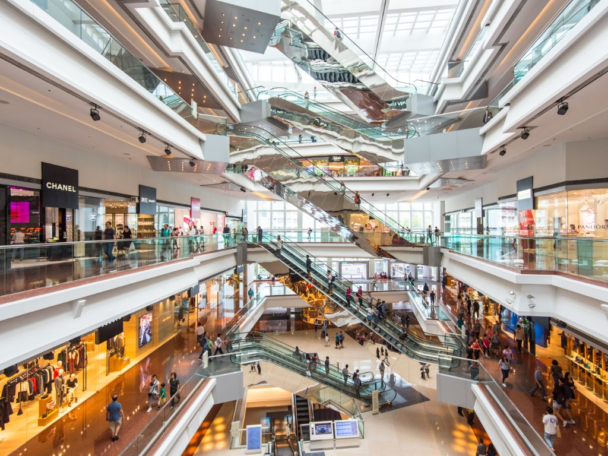
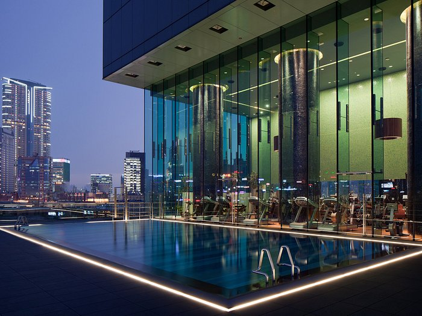
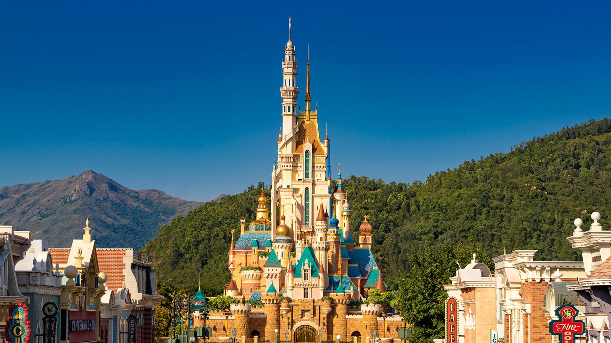
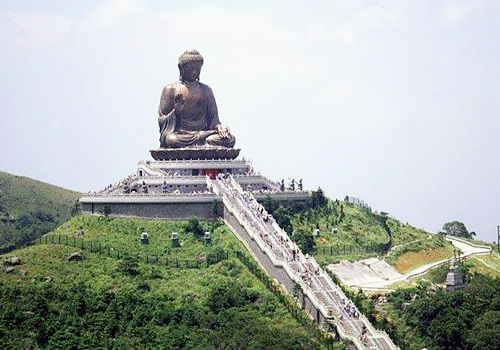

Harbour City Click Me!
Harbour City is a shopping centre in Tsim Sha Tsui, Kowloon, Hong Kong. It occupies the lower levels of a
series of office blocks and hotels, comprising several parts: Marco Polo Hotels, Ocean Terminal, Ocean
Centre, the Gateway and the Pacific Club Kowloon. The complex is located along the west side of Canton
Road, stretching from Star House and the Star Ferry Pier in the south to China Hong Kong City in the
north.
Harbour City is the largest shopping centre in Hong Kong. It is developed and owned by The Wharf
(Holdings) Limited group. The mall covers an area of approximately 2 million square feet, including 70
restaurants, 1 large cinema, an art gallery, observation deck and about 450 retail stores.[1] The office
portion of Harbour City covers an area of 4.6 million square feet spread across 10 commercial buildings.
The total area of the complex is 8.41 million square feet, which includes three luxury hotels, a
500-room serviced apartment (Gateway Apartments), a private club (Pacific Club) and 2,000 parking
spaces.

Hotel Icon Click Me!
A hotel unlike any other. Hotel ICON is a unique hotel designed by
celebrated architects Terence Conran, Rocco Yim and William Lim. Breathtaking open public spaces, a
striking vertical garden by Patrick Blanc, a grand sweeping staircase, innovative guest rooms and three
vibrant dining spaces radiate contemporary style. We offer our guests traditional Asian hospitality,
with all its courteous and attentive qualities – but in a refreshingly modern, stylish and international
environment. Designed by famous local architects, the stylish Hotel ICON enjoys harbour views in Tsim
Sha Tsui East Kowloon. It presents a rooftop outdoor heated pool, pampering spa services and a health
club. The hotel implemented with additional hygiene
measures, including UV light installed air conditioning system and negative air pressure ventilation
system for all guest rooms. The modern and chic guest rooms feature free WiFi and use dark colours and
warm lighting to create a cosy atmosphere.

Hong Kong Disneyland Click Me!
Hong Kong Disneyland, also known as HK Disneyland is a theme
park located on reclaimed land in Penny's Bay, Lantau Island, Hong Kong. It was the first Disneyland in
Asia outside of Japan until Shanghai Disneyland in 2016. Hong Kong Disneyland is located inside the
Hong Kong Disneyland Resort and is owned and managed by Hong Kong International Theme Parks. It is the
most visited theme park in Hong Kong, followed by Ocean Park Hong Kong. Hong Kong Disneyland opened
to visitors on Monday, September 12, 2005, at 13:00 HKT. Disney attempted to avoid problems of cultural
backlash by incorporating Chinese culture, customs, and traditions when designing and building the
resort, including adherence to the rules of feng shui. Notably, a bend was put in a walkway near the
Hong Kong Disneyland Resort entrance so good qi energy would not flow into the South China Sea. The
designs made it the smallest of the Disney parks.

The Big Buddha Click Me!
The Big Buddha is a large bronze statue of Buddha, completed in 1993, and located at Ngong Ping, Lantau
Island, in Hong Kong. The statue, located near the Po Lin Monastery which built it, is a tourist
attraction. The 34 m tall statue weighs over 250 metric tons, and was
constructed from 202 bronze pieces. In addition to the exterior components, there is a strong steel
framework inside to support the heavy load. Visitors have to climb 268 steps to reach the Buddha,
though the site also features a small winding road for vehicles to provide access for disabled people.
The Buddha's right hand is raised, representing the removal of affliction, while the left rests open on
his lap in a gesture of generosity. The statue's official name is Phra Phutta Ming Mongkol Eknakakiri,
which means "the Cherished Auspicious Lord Buddha atop Nāga Hill".
The name is a blend of native Thai, Sanskrit, and Pali words.
